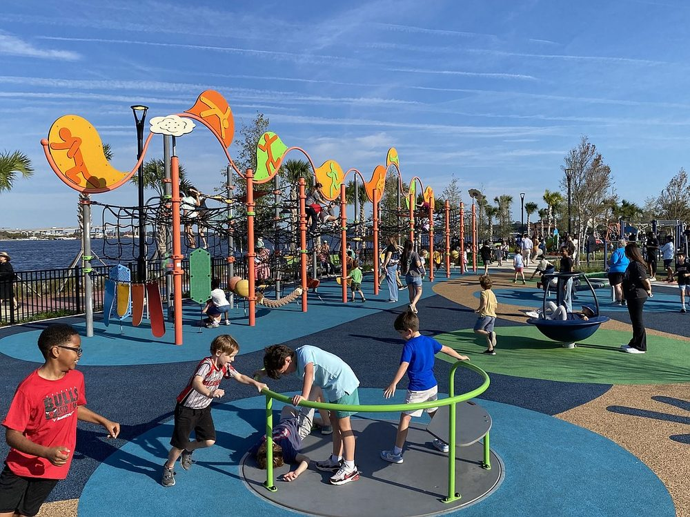
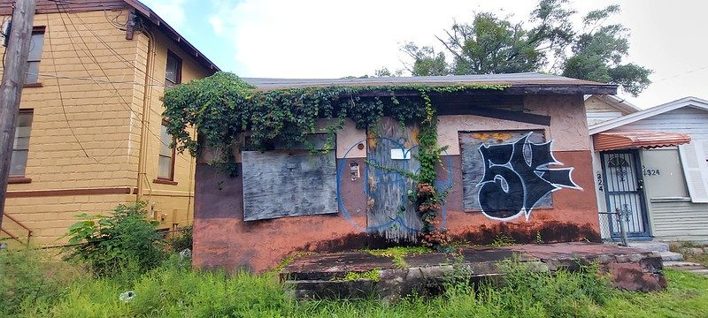

Sheriffs, mayors, attorneys general and fiscal watchdogs, across party lines.
“”
With 100 engaged CEOs, the Jacksonville Civic Council researches the city’s most pressing challenges.
Organizations across Florida have raised significant concerns about Amendment 3. Our own analysis shows the impacts on Jacksonville would be serious.
Removed from Jacksonville’s General Fund, the roughly $2.03 billion account that pays for the Sheriff’s Office, Fire-Rescue, parks, libraries, public works and neighborhood services.
Jacksonville Sheriff’s Office and Fire-Rescue. Already more than half the General Fund.
Bond payments and required pension contributions. Fixed by contract.
Parks, libraries, public works, neighborhoods and every other city service.
General Fund figures are the FY26–27 adopted budget. This is the General Fund specifically, not the full consolidated city budget. Revenue-loss estimate reflects the exemption increase and the assessment-cap change applied to Duval County parcel data. Full method and citations on the sources page.
Jacksonville already invests less in its residents than peer cities, and this would make it worse. Among fourteen comparable cities, Jacksonville spends the least per resident, about $2,065. A reduction of this size is not the scale of thing absorbed by trimming inefficiency. It is the scale of thing that removes services.
Before the consequences: this is the money you already see at work every day, in the ordinary functioning of the city.


Image credits and permissions to be confirmed before publication.
Four changes to how property is taxed in Florida:
Homestead exemption applies to non-school property taxes only. School district taxes are unaffected.
It could try, and that is the second of two paths rather than an escape from both. Avoiding cuts means finding replacement revenue: a higher millage rate, new or higher fees, or a sales surtax.
Millage increases fall hardest on rental and commercial property, and those costs are generally passed along rather than absorbed. The people who never received the homestead break end up helping to pay for it. Amendment 3 also drops the non-homestead assessment cap from 10% to 5% a year, slowing the natural revenue growth that might otherwise have covered part of the gap, and pushing harder toward an explicit rate increase.
These two paths are not mutually exclusive, and the real outcome is likely a mix. But there is no third path where the money simply is not needed.
It is plausible for many renters. Renters get nothing directly from a homestead exemption, since it applies only to owner-occupied homes. If the city or another taxing authority raises millage on rental property to replace lost revenue, a landlord facing a higher tax bill generally passes at least part of it through rather than absorbing it.
Possibly, through the same mechanism: a higher commercial property tax bill, or new and higher fees and sales tax used to offset the shortfall. Small businesses would face that at the same time their customers discover the headline relief was narrower than advertised.
Nothing in Amendment 3 provides for it. The enrolled joint resolution contains no reimbursement, backfill, trust fund or offset for local revenue losses, for any county, and the implementing bill appropriates nothing.
A trust fund was in the original proposal. The filed version of the joint resolution directed the Legislature to create a fund providing grants to help local governments implement the amendment. That provision was removed before passage and does not appear in the enrolled text.
When Florida has reimbursed local governments for past property tax amendments, in 2008 and again in 2024, it did so only for counties defined in state law as fiscally constrained. Duval County has never qualified and does not qualify now. For scale, the entire statewide fiscally constrained distribution is roughly $64.7 million a year shared across 33 counties, about a fifth of Jacksonville’s projected annual loss by itself.
A future Legislature could choose to appropriate something. Nothing obligates it to, and the proposals floated so far are aimed at rural counties rather than urban ones.
Enrolled and filed texts of CS/HJR 1-F, 2026 Special Session; CS/SB 4F; Florida Statutes ss. 218.12, 218.125, 218.136 and 218.67; Office of Economic and Demographic Research distribution schedule, FY 2025–26.
Jacksonville already spends less per resident than any of fourteen comparable cities, about $2,065. A reduction of this size is not the scale of thing that gets absorbed by trimming inefficiency. It is the scale of thing that removes services.
Public safety cannot quietly absorb it either. It is already more than half of the General Fund, and its costs are rising independently of this amendment: the JSO and Fire-Rescue pension is roughly 47% funded, which requires a contribution exceeding 100% of covered payroll.
Amendment 3 is presented as relief for homeowners. It is worth knowing how narrowly that relief is distributed, because everyone shares the cost of it either way.
Jacksonville homes already pay no property tax at all. A larger exemption gives them nothing further.
of Duval parcels see no direct homestead savings, including every rented home in the city.
Annual savings range for homes that do benefit. The larger figures go to higher-value homes.
The homestead exemption applies to owner-occupied homes. If you rent, you receive nothing directly, while any millage increase, fee or sales-tax change used to replace the lost revenue reaches you the same as everyone else.
Closing a gap this size is a series of choices. The budget tool lets you try making them.
With 100 engaged CEOs, the Jacksonville Civic Council pursues the vision of Jacksonville as a world-class city by researching the city’s most pressing challenges, advocating for forward-thinking public policy, and powering strategic execution.
© 2026 Jax Tax Facts, a project of the Jacksonville Civic Council. For public education purposes; not legal, tax, or financial advice. Jacksonville, Florida.